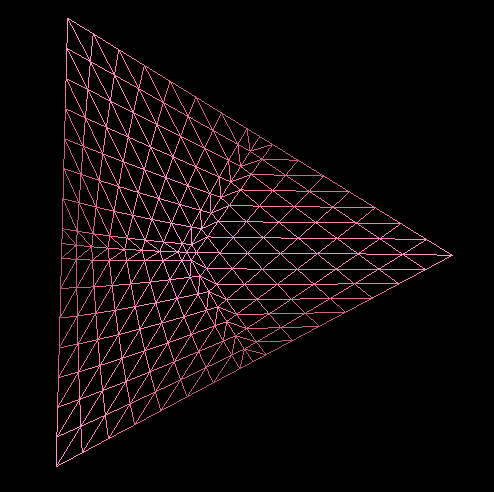
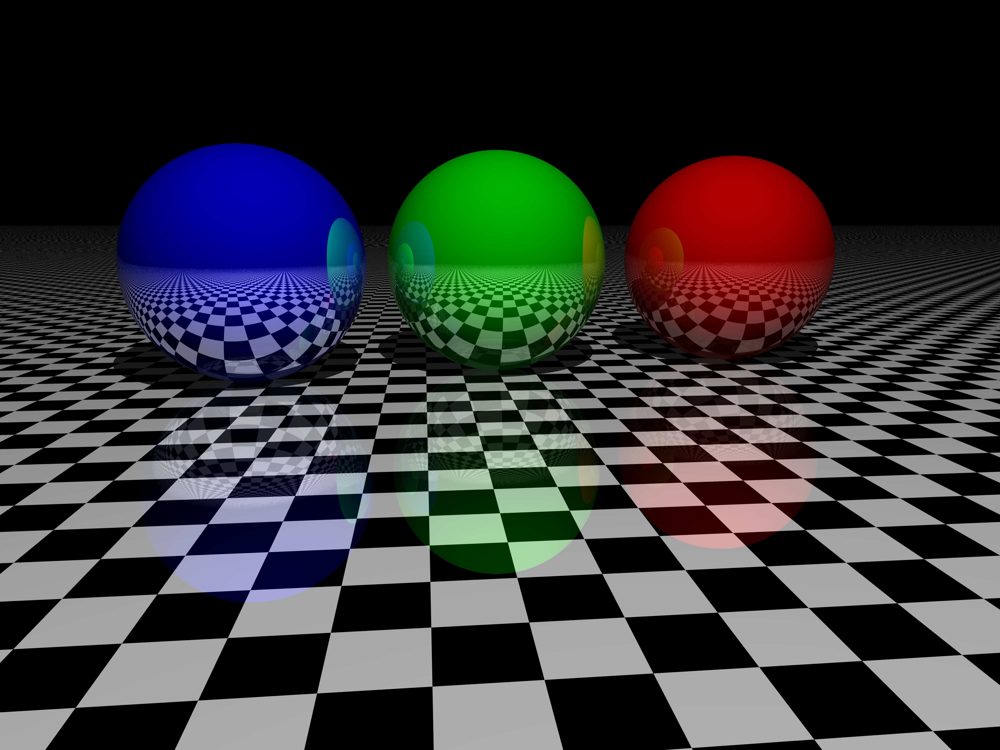

Welcome to OpenGL 
Welcome to the online book for learning OpenGL! Whether you are trying to learn OpenGL for academic purposes, to pursue a career or simply looking for a hobby, this book will teach you the basics, the intermediate, and all the advanced knowledge using modern (core-profile) OpenGL. The aim of LearnOpenGL is to show you all there is to modern OpenGL in an easy-to-understand fashion with clear examples, while also providing a useful reference for later studies.
So why read these chapters?
Throughout the internet there are thousands of documents, books, and resources on learning OpenGL, however, most of these resources are only focused on OpenGL's immediate mode (commonly referred to as the old OpenGL), are incomplete, lack proper documentation, or are not suited for your learning preferences. Therefore, my aim is to provide a platform that is both complete and easy to understand.
If you enjoy reading content that provides step-by-step instructions, clear examples, and that won't throw you in the deep with millions of details, this book is probably for you. The chapters aim to be understandable for people without any graphics programming experience, but are still interesting to read for the more experienced users. We also discuss practical concepts that, with some added creativity, could turn your ideas into real 3D applications. If all of the previous sounds like someone that could be you, then by all means, please continue.
What will you learn?
The focus of these chapters are on Modern OpenGL. Learning (and using) modern OpenGL requires a strong knowledge of graphics programming and how OpenGL operates under the hood to really get the best of your experience. So we will start by discussing core graphics aspects, how OpenGL actually draws pixels to your screen, and how we can leverage that knowledge to create some funky looking effects.
On top of the core knowledge we will discuss many useful techniques that you can use for your applications, like: traversing a scene, create beautiful lighting, load custom-made objects from a modelling program, do cool post-processing techniques, and much more. We also feature a walkthrough series where we actually create a small game based on our obtained OpenGL knowledge, so you will really get a feel of what it's like to actually do graphics programming.